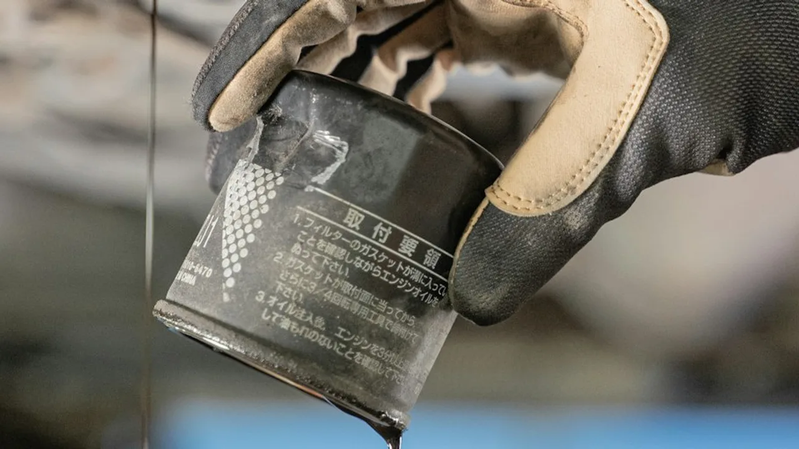
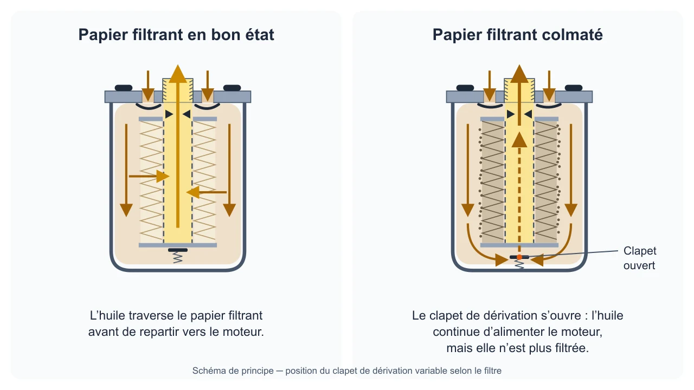
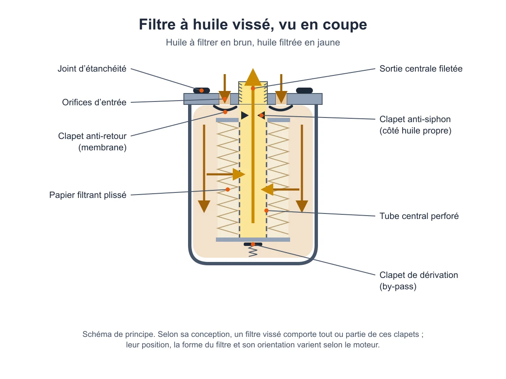

H1 (champ protégé)conservénon modifiéComment changer un filtre à huile
badgescodé · FH-16 : calculés, non sourcésR3 HERO · rip 12renseigner l'image
__seo_gamme_conseil 18 · S1 (carte « avant »)amélioréadmis + catalogueAvant de remplacer le filtre à huile
Le filtre à huile empêche les impuretés d'entrer dans le circuit de lubrification du moteur, et il se remplace aux échéances fixées par le constructeur du véhicule.
Avant de commencer, réunissez :
- la référence prévue pour votre motorisation, choisie à partir du véhicule et non d'après l'apparence de l'ancien filtre ;
- les instructions du constructeur du véhicule et du fabricant du filtre : ce guide ne donne pas de consigne de serrage valable pour tous les filtres ;
- la forme prévue : un filtre vissé se change en entier ; avec une cartouche, seul l'élément filtrant est renouvelé et le boîtier reste en place. Pour une cartouche, la fiche de la référence précise parfois si le joint torique est fourni.
Sans ces instructions, confiez l'intervention à un professionnel.
Sources : Base de connaissances AutoMecanik
L'essentiel (extractSummaryPoints)7 points, calculés par le code à partir des sectionscodé · libellés FH-16L'essentiel en 7 points
- Avant de commencer : Le filtre à huile empêche les impuretés d'entrer dans le circuit de lubrification du moteur, et il se remplace aux échéances fixées par le constructeur du véhicule.
- Signes d'usure : Le filtre à huile se remplace aux échéances d'entretien fixées par le constructeur du véhicule : reportez-vous au carnet d'entretien ou à la notice.
- Compatibilité : Le filtre à huile se choisit à partir du véhicule, jamais d'après son aspect ou une dimension approchée.
- Démontage : La dépose dépend de la forme du filtre et du moteur : suivez les instructions du constructeur du véhicule et du fabricant du filtre.
- Erreurs à éviter : Choisir le filtre d'après son apparence ou une dimension approchée, au lieu de partir du véhicule.
- Vérification finale : Après le remplacement, si le témoin de pression d'huile s'allume, suivez la notice de votre véhicule.
- Quand aller au garage : Si vous n'avez pas les instructions de montage du constructeur et du fabricant du filtre, confiez l'intervention à un professionnel.
encartcodé · FH-16Comparez les prix et trouvez la piece compatible avec votre vehicule.
__seo_gamme_conseil 20 · S2amélioréadmisQuand remplacer le filtre à huile
R3 S2 · rip 13renseigner l'image
Le filtre à huile se remplace aux échéances d'entretien fixées par le constructeur du véhicule : reportez-vous au carnet d'entretien ou à la notice. Aucune durée ni aucun kilométrage ne vaut pour tous les véhicules.
Un filtre gardé trop longtemps peut se colmater. Son clapet de dérivation (by-pass) s'ouvre alors pour continuer d'alimenter le moteur, avec une huile qui n'est plus filtrée. Plus l'intervalle prévu par le constructeur est long, plus la qualité du filtre compte.
Sources : Base de connaissances AutoMecanik (provenance proposée, type wiki)
__seo_gamme_conseil conseil-7-S2_DIAG-1774724299375 · S2_DIAGamélioréadmis (Symptômes & diagnostic, consigne propre au véhicule cité) + editorialVoyant de pression d'huile : par où commencer
Un symptôme seul ne désigne pas le filtre à huile. Le tableau ci-dessous donne la consigne d'un véhicule précis ; pour un autre véhicule, suivez sa propre notice.
| Situation | À faire |
|---|---|
| Renault Clio 5 phase 1 : le témoin de pression d'huile s'allume à la mise du contact, puis s'éteint après quelques secondes. | C'est le fonctionnement décrit par la notice de ce véhicule. |
| Renault Clio 5 phase 1 : le témoin s'allume en roulant, avec le témoin d'arrêt impératif et un signal sonore. | S'arrêter impérativement, couper le contact et vérifier le niveau d'huile. Si le niveau est normal, l'alerte a une autre cause : la notice demande de faire appel à un représentant de la marque. |
| Autre véhicule. | Suivre la notice du véhicule. Pour orienter la recherche avant d'acheter une pièce, commencer par le diagnostic. |
Sources : Base de connaissances AutoMecanik (provenance proposée, type wiki)
__seo_gamme_conseil conseil-7-S3-1771371936696 · S3amélioréadmis (Critères de choix, Fonctionnement, Marques & qualité) + catalogueChoisir le bon filtre à huile
R3 S3 · rip 14renseigner l'image
Le filtre à huile se choisit à partir du véhicule, jamais d'après son aspect ou une dimension approchée.
- Partez du véhicule. Dans le catalogue, sélectionnez la marque, le modèle, l'année et la motorisation exacte. Deux versions d'un même modèle peuvent recevoir des références différentes.
- Prenez la forme prévue par le moteur : filtre vissé ou cartouche.
- Ne vous fiez pas à l'apparence. Beaucoup de filtres se ressemblent mais diffèrent à l'intérieur selon le moteur : clapet anti-retour, filetage de raccordement, pression d'ouverture du by-pass, média filtrant, finesse de filtration, surpression admissible.
- Regardez la qualité. Le papier filtrant, le by-pass et le clapet anti-retour font partie des caractéristiques de qualité d'un filtre.
Les clapets d'un filtre vissé
Selon sa conception, fixée par le constructeur du moteur ou du véhicule, un filtre vissé peut comporter trois types de clapets :
- anti-retour : le plus souvent une membrane en caoutchouc, il empêche l'huile de quitter le filtre moteur arrêté, surtout quand le filtre est monté à l'horizontale ou tête en bas ;
- de dérivation (by-pass) : quand le filtre est colmaté ou que l'huile froide est trop épaisse, il s'ouvre pour que le moteur reste alimenté, même avec une huile non filtrée. Sa pression d'ouverture diffère selon le moteur ;
- anti-siphon : placé côté huile propre, il garde le filtre plein ; au démarrage, l'huile arrive vite au moteur, ce qui réduit fortement le frottement à sec.
Ces différences ne se voient pas de l'extérieur. Les filtres rattachés à votre motorisation sont listés sur la page filtre à huile du catalogue.
Sources : Base de connaissances AutoMecanik (provenance proposée, type wiki)
__seo_gamme_conseil 21 · S4_DEPOSEamélioréadmis + catalogueDéposer l'ancien filtre
La dépose dépend de la forme du filtre et du moteur : suivez les instructions du constructeur du véhicule et du fabricant du filtre.
- Vérifiez que le filtre neuf est la référence prévue pour votre motorisation.
- Repérez la forme : un filtre vissé se dépose en entier ; avec une cartouche, seul l'élément filtrant sort du boîtier, qui reste en place.
- Déposez l'ancien filtre ou l'ancien élément en suivant l'instruction du constructeur du véhicule.
Sources : Base de connaissances AutoMecanik (provenance proposée, type wiki)
__seo_gamme_conseil 22 · S4_REPOSEamélioréadmis + catalogueMonter le filtre neuf
Même un filtre de qualité ne fonctionne correctement que s'il a été bien monté.
- Montez le filtre neuf en suivant les instructions du constructeur du véhicule et du fabricant du filtre : ce guide ne donne pas de consigne de serrage valable pour tous les filtres.
- Pour une cartouche, vérifiez sur la fiche de la référence si le joint torique est fourni.
Sources : Base de connaissances AutoMecanik (provenance proposée, type wiki)
__seo_gamme_conseil conseil-7-S5-1771371936739 · S5amélioréadmisErreurs à éviter
- Choisir le filtre d'après son apparence ou une dimension approchée, au lieu de partir du véhicule.
- Dépasser l'échéance du constructeur : le filtre peut se colmater et laisser passer, par le by-pass, une huile non filtrée.
- Attribuer un voyant d'huile au filtre sans rechercher la cause.
Sources : Base de connaissances AutoMecanik (provenance proposée, type wiki)
__seo_gamme_conseil conseil-7-S6-1771938637895 · S6amélioréadmisAprès le remplacement
Après le remplacement, si le témoin de pression d'huile s'allume, suivez la notice de votre véhicule.
Sources : Base de connaissances AutoMecanik (provenance proposée, type wiki)
__seo_gamme_conseil conseil-7-S_GARAGE-1772504383540 · S_GARAGEamélioréeditorial fondé sur admisQuand confier l'intervention à un professionnel
Si vous n'avez pas les instructions de montage du constructeur et du fabricant du filtre, confiez l'intervention à un professionnel.
Si le témoin de pression d'huile s'allume en roulant, suivez la notice du véhicule. Celle de la Renault Clio 5 phase 1 demande, si le niveau d'huile est normal, de faire appel à un représentant de la marque.
Sources : Base de connaissances AutoMecanik (provenance proposée, type wiki)
__seo_gamme_conseil conseil-7-S7-1771371936783 · S7amélioréadmis (related_parts) + cataloguePièces liées au filtre à huile
Ces filtres traitent d'autres fluides que l'huile et ont chacun leur propre référence.
Sources : Base de connaissances AutoMecanik (provenance proposée, type wiki)
__seo_gamme_conseil conseil-7-S8-1771509122681 · S8amélioréadmis (FAQ) + catalogueQuestions fréquentes sur le filtre à huile
Que remplace-t-on lors de l'entretien ?
Un filtre vissé se change en entier, car son boîtier et son élément filtrant forment un seul bloc. Avec une cartouche, seul l'élément filtrant est renouvelé.
Quand remplacer le filtre à huile ?
Aux échéances d'entretien prévues par le constructeur du véhicule. Aucune durée ni aucun kilométrage ne vaut pour tous les véhicules.
Peut-on choisir un filtre à sa taille ou à son apparence ?
Non. Des filtres qui se ressemblent peuvent être très différents à l'intérieur selon le moteur. Le choix se fait à partir du véhicule.
Le voyant de pression d'huile vient-il du filtre ?
Ce voyant ne désigne pas à lui seul le filtre. Suivez la notice du véhicule, puis faites rechercher la cause.
À quoi sert le clapet anti-retour ?
Il empêche l'huile de quitter le filtre quand le moteur est arrêté, surtout quand le filtre est monté à l'horizontale ou tête en bas. Tous les filtres vissés n'en ont pas : cela dépend du moteur.
Sources : Base de connaissances AutoMecanik (provenance proposée, type wiki)
encart bas de pagecodé · FH-16